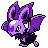

#481
Noibat
Dragon
Abilities: Frisk, Big Pecks, Soundproof
Base stats BST 245
HP40
Attack30
Defense35
Speed55
Sp. Atk45
Sp. Def40
Evolution
dbbw EVOLVE_LEVEL, 48, NOIVERNLevel-up learnset
LevelMoveType
Lv. 1AbsorbGrass
Lv. 1AstonishGhost
Lv. 5Gust
Lv. 9SupersonicNormal
Lv. 13Wing Attack
Lv. 17AgilityPsychic
Lv. 21BiteDark
Lv. 25Air Slash
Lv. 29WhirlwindNormal
Lv. 30Dualwingbeat
Lv. 32Defog
Lv. 33ScreechNormal
Lv. 34Scale ShotDragon
Lv. 36Dragon TailDragon
Lv. 37Roost
Lv. 41Dragon ClawDragon
Lv. 45Hurricane